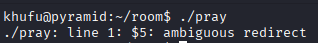
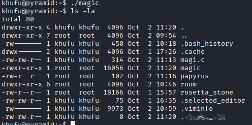

CTF를 처음 접하는 사람들도 자연스럽게 웹 취약점부터 시스템 권한
상승까지 단계적으로 경험할 수 있는 시나리오를 만들고 싶었습니다.
단순히 취약점 나열이 아니라, 좀 더 재미있는 방식으로 접근할 수 있게
단계별 흐름을 배치하고 침투 과정을 압축해 표현하되 각 단계에서 배우는
것이 명확해야 한다고 생각했습니다.
컨셉 선정:
'이집트'와 '피라미드'를 키워드로 잡아, 4단계 문제가 마치 피라미드
상층부로 올라가듯 난이도를 높이 고 최종적으로 ' 파라오의 보물(Final
Flag)'에 도달하는 스토리라인을 구성했습니다
4단계 문제 흐름도
단계
취약점 유형
설명
1단계
SQL Injection (웹)
데이터베이스에 직접 접근하여 사용자 인증 우회
2단계
Sensitive Data Exposure, Steganography (웹)
응답 헤더·주석에 숨겨진 정보 발견, 이미지에 인코딩된 데이터 추출
3단계
Broken Access Control, Directory Listing (웹)
부적절한 권한 검사로 인한 파일 접근, 디렉토리 탐색을 통한 정보
수집
4단계
Buffer Overflow, SetUID 권한 상승 (시스템)
스택 오버플로우로 EIP 제어 후 권한 상승 바이너리 실행, 최종 Flag
획득
각 단계를 순서대로 풀어야만 다음 단계의 힌트나 접근 경로가 열리는 흐름을 설계했습니다.
시스템 구조 구성도
제가 담당한 파트인 시스템 부문의 구조에서는 매 1분마다 작동하는
crontab 작업이 있습니다. 이 작업은 /home/pyramid 디렉터리 내의 특정
스크립트를 실행하여, CTF 문제 풀이에 필요한 힌트와 파일들을
주기적으로 갱신합니다. 이를 통해 참가자들은 지속적으로 새로운 정보를
얻으며 도전 과제를 해결할 수 있습니다.
일부러 일부 폴더와 파일에 필요 이상의 권한을 부여하여, 참가자들이
권한 상승(Privilege Escalation) 기법을 연습할 수 있도록
설계하였습니다. 이를 통해 참가자들은 실제 환경에서 발생할 수 있는
보안 취약점을 이해하고 대응하는 능력을 키울 수 있습니다.
또한 gcc 컴파일러와 c 파일에 Stack Buffer Overflow 취약점을
포함시켜, 참가자들이 메모리 관리와 보안 취약점에 대한 이해를 높일 수
있도록 하였습니다.
최종적으로 발견되는 이집트 상형문자(히에로글리프)와 같이 일반적으로
바로 해독할 수 없는 문자를 포함하여 CTF의 컨셉을 지킴과 동시에, Base
58과 같은 다양한 인코딩 방식을 활용하여 참가자들이 다양한 해독
기법을 연습할 수 있도록 하였습니다.
Pyramid 1 단계 SQLi Walkthrough
IP 확인 후 HTTP로 서비스에 접속한다.
초기 진입 페이지 화면
검색 입력창에 ' OR '1'='1 과 같은
가장 기본적인 SQLi 페이로드를 입력했을 때 전체 행이 반환되는지
확인한다.
기본 SQLi 페이로드 입력 후 전체 레코드가 조회되는 모습
알 수 있는 사실
입력값이 필터링 없이 DB 쿼리에 직접 사용된다.
URL 에서 파라미터 name 값이 그대로 노출되며 GET 방식으로 서버로
전송된다.
화면에는 3개의 칼럼만 표시되지만 실제 쿼리에는 더 많은 컬럼이 존재할
수 있다.
OR, SELECT 등 키워드가 차단되지 않아 SQL Injection 취약점이
존재한다.
1. 테이블명 추출 SQLi
UNION 기반 SQL Injection을 이용해 현재 데이터베이스의 테이블 이름을
수집한다.
' UNION SELECT 1, group_concat(table_name), 3
FROM information_schema.tables
WHERE table_schema = database() --
두 번째 컬럼 위치에 테이블 이름들이 출력된다.
2. 칼럼명 추출 SQLi
식별한 테이블 pharaohs 에 대해 모든
컬럼명을 조회한다.
' UNION SELECT 1, group_concat(column_name), 3
FROM information_schema.columns
WHERE table_name = 'pharaohs' --
두 번째 컬럼 위치에 pharaohs 테이블의 모든 컬럼명이 출력된다.
3. secret_info 컬럼에서 최종 힌트 획득
pharaohs 테이블의
secret_info 컬럼을 대상으로 조건부
조회를 수행해 최종 힌트를 얻는다.
' UNION SELECT 1, 2, secret_info
FROM pharaohs
WHERE id = 6 --
secret_info 컬럼에서 의미 있는 문장이 조회된다.
4. 소스코드 주석과 ROT13 힌트 해석
페이지 소스 주석에 매우 긴 문자열이 포함되어 있다.
ROT13.com 등 온라인 도구를 이용해 문자열을 디코딩한다.
ROT13 디코딩 결과는 “파라오의 암호는 문지기의 열쇠를 위한 것이 아니라,
펼쳐지는 나일강 지도의 논리를 위해 존재한다. 흐름을 따라 다음 방으로
나아가라.” 와 같은 의미의 문장이다.
이 문구는 SSH 접속 정보가 아니라는 점을 암시하며, 흐름(flow)을 따라 웹
디렉터리를 이동해야 한다는 메시지를 비유적으로 전달한다.
슬래시(/)와 함께 디렉터리 경로 형태의 문자열이 포함되어 있다.
최종 힌트에 슬래시(/)가 포함되어 있어
디렉터리 경로임을 유추할 수 있고,
http://pyramidIP/the_architect_of_the_Great_Pyramid
와 같은 URL 로 이동하면 다음 단계로 넘어갈 수 있다.
trivia 칼럼에는 3000자 분량의 반복 문자열과 수동 SQLi 를 유도하는
메시지가 포함된다.
trivia 칼럼의 내용을 읽어 보면 자동화 도구(sqlmap) 대신 수동 SQL
Injection 과정을 경험해 보라는 의도가 담겨 있음을 알 수 있다.
더 자세한 풀이 과정은 외부 블로그에 정리되어 있으며, 비밀번호는
cmd 로 안내된다.
Pyramid (2) – Find Split Fragment and Decryption
0. 시나리오 개요
/the_architect_of_the_Great_Pyramid/
페이지에 접속하면 세 개의 fragment를 찾아 조합하고, 제공된 스크립트에
따라 암호를 복호화해야 한다는 힌트가 나온다.
코드 상에서 altar 배열은 크기가 7로
고정되어 있지만,
strcpy(altar, offering); 호출에는
길이 검증이 없으므로 입력 값이 크면 버퍼 오버플로우가 발생할 수 있다.
이 취약점을 이용해 offering 변수에
충분히 긴 문자열을 집어넣고, 이후 흐름에서 이를 실행시키는 방식으로
익스플로잇을 진행한다.
6. book_pen, dedicate – 누락된 3번째 제물 생성
6‑1. book_pen 에 공격용 입력 작성
book_pen 파일에 altar 크기를 넘어서는 길이의 문자열을 기록한다.
/home/khufu/room/book_pen 파일에
offering 변수로 쓰일 긴 문자열을
기입해, 주변 메모리 영역까지 침범할 수 있도록 구성한다. 스크린샷에
보이는 값은 예시이며, 실제 공격에 맞게 조정할 수 있다.
6‑2. dedicate 실행 후 room/3/offering 생성
dedicate 실행 후 room/3 디렉터리에 offering 파일이 새로 생성된다.
/home/khufu/room/dedicate 파일을
실행하면, 이전에 없던
room/3/offering 이 생성되고, 내용에는
book_pen 에 입력했던 문자열이 그대로
들어간 것을 확인할 수 있다.
이제 room/1~4 의 네 개 offering 이 모두 준비되었으므로,
papyrus 힌트에 따라
pray 를 실행해 제물이 모두 모이도록
한다.
7. pray – offering 결합과 magi.c 생성
/home/khufu/room/pray 파일을 실행하면
분할된 네 개의 offering 파일을 하나로 합쳐 새로운 C 소스 파일을
생성하려는 동작이 수행된다.
pray 실행 시 5번째 인자 관련 메시지를 통해 최소 5개의 인자가
사용됨을 유추할 수 있다.
Linux 에서는
cat file1 file2 >> file3 처럼
여러 파일을 이어붙여 하나의 파일을 만드는 것이 가능하다. pray 는 네
개의 offering 파일을 하나의 C 코드로 묶는 역할을 하는 것으로 보이며,
결과 파일 이름은 .c 확장자를 가져야
한다.
/home/khufu/papyrus 내용을 다시 보면
“magi…c 가 필요하다” 라는 문장이 등장하므로,
magi.c 라는 이름으로 코드를 생성하는
흐름을 추측할 수 있다.

papyrus 에서 magi/magic 관련 힌트를 다시 확인
pray 실행이 성공적으로 끝나면 magi.c 가 생성되고, 네 개의 offering
코드가 합쳐진 완전한 C 코드가 된다.
8. magic – 주기적 실행과 숨겨진 파일
/home/khufu/magic 파일을 다시 열어
보면 마지막 줄에 “magic 은 1분마다 일어난다” 는 설명이 있다.
magi.c 가 존재할 경우 1분마다 magic 이라는 실행 파일이 생성되는
구조를 암시한다.
실제로 /home/khufu 디렉터리를 다시
확인해 보면, 이전에 없던 magic 파일이
새로 생긴 것을 볼 수 있고, magi.c 가 존재할 때마다 일정 주기로 해당
바이너리가 생성된다.
magic 실행 시 특수 문자로 된 숨겨진 파일이 생성된다.
./magic 을 실행하면 특수 문자로
구성된 파일 이름이 출력되며, 해당 파일을 읽을 수 있는 권한이 있으므로
내용을 확인해 본다. 파일 이름은 직접 타이핑하기 어렵기 때문에,
터미널에서 복사·붙여넣기를 사용하는 것이 편리하다.

특수 문자로 구성된 힌트 문자열과 “=> (...) => 58” 이라는 추가
힌트가 포함되어 있다.
9. Hieroglyphs 디코딩과 Base58 인코딩
숨겨진 파일과 이전 단계에서 계속 등장하던 상형문자는 ‘Hieroglyphs’
라고 부르며, 온라인 도구를 활용해 영문 문자열로 디코딩할 수 있다.
Hieroglyphs 디코더를 사용해 상형문자 문자열을 영문으로 변환
디코딩 결과 xgdmklzbthnqfpryAswi 라는
문자열을 얻을 수 있다. 하지만 힌트에는 “(...) => 58” 이라고 되어
있으므로, 추가로 Base58 인코딩을 적용해야 한다.
Hieroglyphs 를 디코딩해 얻은 문자열 xgdmklzbthnqfpryAswi
CyberChef 등 도구에서 Base58 인코딩을 수행하면
2gHsQQTDGYNerJuyFFGeUkFEVDj6 라는
값을 얻을 수 있다. 이 값이 다음 SSH 계정 비밀번호로 사용된다.
Base58 인코딩 결과:
2gHsQQTDGYNerJuyFFGeUkFEVDj6
10. 최종 플래그 – tutankhamun 계정
최종적으로 tutankhamun 계정에 SSH
접속을 시도한다. 비밀번호로는 방금 구한 Base58 인코딩 문자열
2gHsQQTDGYNerJuyFFGeUkFEVDj6 를
사용한다.
Tutankhamun 계정으로 성공적으로 접속한 화면
접속 후 루트 디렉터리로 이동하면
flag 파일을 발견할 수 있고, 이 파일
내용을 출력하면 Pyramid CTF 의 최종 플래그를 획득하게 된다.
root 디렉터리에서 발견한 final flag 파일
최종 flag를 찾으며 CTF 풀이가 끝나게 된다.
후기
느낀점
본 문서에서는 Pyramid CTF의 주요 단계들을 상세히 살펴보았습니다. 각
단계마다 요구되는 기술과 사고 방식을 이해하는 것이 중요하며, 이를 통해
유사한 CTF 문제에 대한 접근 방법을 익힐 수 있습니다.
이번 CTF 머신 제작을 통해 단순한 문제 풀이를 넘어, 실제 보안 취약점
분석과 익스플로잇 개발에 필요한 실전 감각을 키우는 데 큰 도움이
되었습니다. 이런 경험을 바탕으로 앞으로도 다양한 CTF에 참여하여 경험을
쌓고, 최신 보안 트렌드와 기술을 습득해 나가길 바랍니다.


{kind=link}